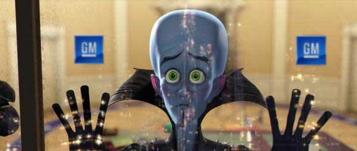
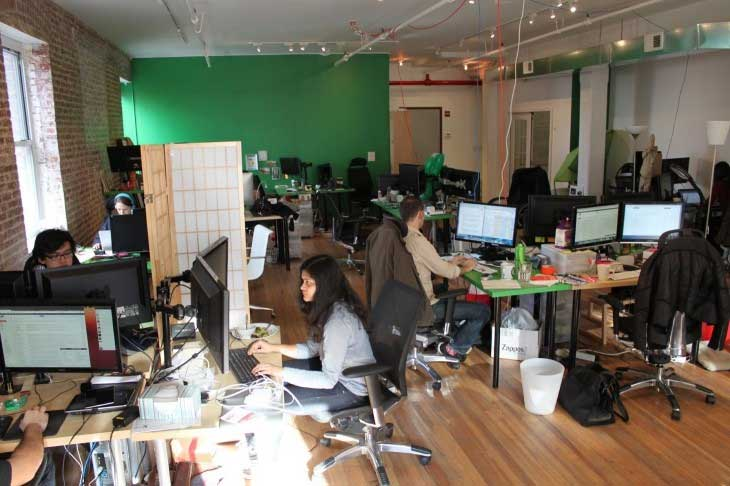
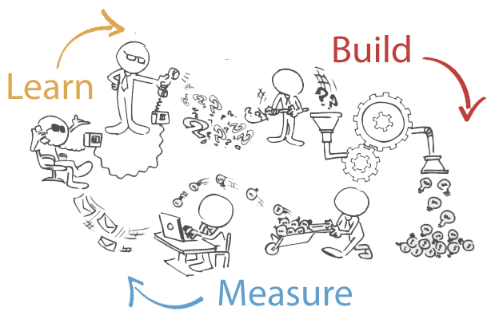
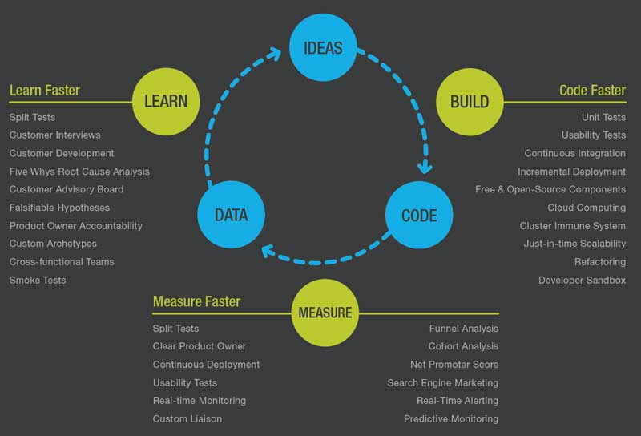

LeanMethodology
Introducing Me
Speakers who proclaim their expertise early on create confirmation bias. They no longer have to earn their keep with the audience which makes their job a lot easier.
The Talking Heads
Reis, Blank, McClure
When you return from a conference armed with advice from industry experts there are exactly five possible outcomes.
(1)
You didn't relate to the speaker. They come from a different era, background, company or product.
(2)
You leave all charged up but quicklyreturn back to the status quo.
(3)
You keep thinking you’re not doing something right
(4)
You decide all this stuff is bulls&*t
(5)
It changes your life, you build a company, make millions and retire young.
(5)(a)
It really works, you make somebody else millions and they retire young.
Lean Bedtime Story
The origins of Lean are so interesting because (like all good stories) we have an antagonist and protagonist
In 1970's and 80's Toyota begins re-imagining development, manufacturing and supply chain processes. They spend very little on advanced manufacturing or information technology.
GM responds by investing nearly 60 billion in resources including state of the art technology to improve quality and reduce costs. They do not change their processes or values.

Within two decades Toyota's factories are among the best in the world whileGM's quality hits rock bottom.
Moral of the story: An organization's real capabilities lie in its processes and values
not it's resources.
Lost in Translation
Two Decades
Without there is no story
Genchi Gembutsu
"go and see for yourself"
does not equal
"talk to your customer"
It's easier to be Lean if you don't have
any processes and values
What is a startup?
How many people?
How much revenue?
Management structure?
Certain vibe or culture?
Eric Ries
"Any institution creating a product or service under conditions of extreme uncertainity"
Another Trait
Operates with a ‘Survive or Die’ Attitude
The Lean Image

Using doors as desks, crowding a dozen people into a loft and eating dinner five nights a week at your desk doesn't make you Lean.
it makes you miserable

Objective
Minimize the total time thru the loop.
Repeat until you die.
Reason #1
Most everything you do in
a startup is a waste of time
Reason #2
Most everything you think
you know is completely wrong
The Goal
Ruthlessly eliminate waste, test your hypothesis, get traction before you run out of time or money
{Big Hint}
You always run out of time
before you run out of money
For a brief moment in time your idea, customers, competitors and resources all align so you get a viable shot at success.
{scheduled fight break}
Getting Started

Build, Measure, Learn starts with
"build" and most organizations
fail on this very first step.
Quit Before You Start
Find any reason not to pursue your idea
so long as fear isn't one of them
Start Talking
You'll be lucky if anyone cares what you're doing (including competitors) so tell anyone who'll listen what you're doing
Aim for Zero
Find the fastest way to test the leap of faith proposition your success depends on. If you can do it without building any product at all you should.
Minimum Viable Product
You want to apologize to everyone for what an embarrassing, incomplete, piece of crap you're asking them to use.
{Hint} If you're willing to put your name on it then you spent to much time on it.
Genchi Gembutsu
"Go see for yourself" is very different from developing a customer story. Find a way to live the problem you're trying to solve.
Be Lean Tonight
About Me in 90 seconds
(original content removed for privacy)
Dunwrite
Nudged
Cliqes
Fuel U
Think Uber meets Exxon
Nobody wants to stop for gas
they have to stop for gas
(Centralization 1900's concept, Amazon Market Fresh)
Market Research:
Environmental - No issues (marine, fleet)
Live the Problem - Done (married, kids, busy)
Observation - Done (200 hrs video)
Interviews - Done (love idea)
Pricing - Complicated (fuel rack rates)
Leap of Faith:
We can get high area density to make distribution model profitable.
90% of a neighboorhood uses services.
Let's Build
We want 20 homes in 1 city block using service within 2 weeks.
Minimum Viable Product
What does it look like?
Does it test our hypothesis
Lean U faces significant obstacles.
If we can't prove our hypothesis
they're not problems. If we can,
then they're worth solving.
{working session}
You Should Know
Lean Methodology
Still in it’s infancy, not been studied academically, needs an order of magnitude greater scientific rigor, no long term data to support the theory, far from proven it actually works, but don't wait to test it out.
The Myth of Media
There is a mythological industrial complex that needs to sell the poor, starving, genius founder story who completes the hero's journey and gets the castle.
None of it's True
The real story is usually dull, accidental
and full of more aimless pivots then
anyone will admit.